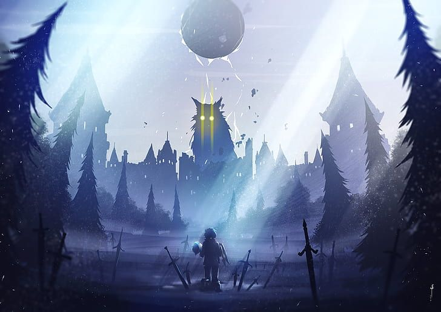

Bem-vindo ao Universo de Re:Zero
Explore o mundo de fantasia, mistério e drama que conquistou fãs ao redor do mundo.
O que é Re:zero?
Re:Zero kara Hajimeru Isekai Seikatsu (no Brasil: Re:Zero – Começando uma Vida em Outro Mundo) é uma série de light novel escrita por Tappei Nagatsuki e ilustrada por Shinichirou Otsuka. A história se centra em Subaru Natsuki, um hikikomori que de repente se vê transportado para outro mundo enquanto voltava para casa após sair de uma loja de conveniência. A série foi inicialmente serializada no website Shōsetsuka ni Narō a partir de 2012. Trinta e nove volumes foram publicados pela editora Media Factory desde 25 de janeiro de 2014, com a impressão da MF Bunko J
Personagens Principais
Subaru Natsuki
O protagonista, com a habilidade "Retorno pela Morte".
Emilia
Meia-elfa candidata ao trono de Lugnica, alvo de preconceito.
Rem
Oni leal e poderosa, profundamente ligada a Subaru.
Ram
Irmã de Rem, exímia usuária de magia e extremamente leal a Roswaal.
Beatrice
Guardião da biblioteca do Roswaal, possui vasto conhecimento mágico.
Culto da Bruxa
Petelgeuse Romanee-Conti
Arcebispo da Preguiça, enlouquecido pelo fanatismo.
Capella Emerada Lugnica
Arcebispa da Luxúria, manipuladora de carne.
Lye Batenkaitos
Arcebispo da Gula, devorador de memórias.
Regulus Corneas
Arcebispo da Ganância, capaz de parar o tempo em seu corpo.
Sirius Romanee-Conti
Arcebispa da Ira, pode compartilhar dor com os outros.